<title>Wilbid saison 2, Toghu</title>
<meta name="claude:viewport-fit-sides" content="cover">
<link rel="preconnect" href="https://fonts.googleapis.com">
<link rel="preconnect" href="https://fonts.gstatic.com" crossorigin>
<link href="https://fonts.googleapis.com/css2?family=Syne:wght@700;800&family=Manrope:wght@400;600;800&family=Gloock&display=swap" rel="stylesheet">
<style>
/* Layout : bandes pleine largeur sur velours, comme une étoffe déroulée ; le contenu reste aligné à gauche dans une colonne de 1200px.
   Saison 2 garde le logo, Syne et Manrope de la saison 1 ; elle change d'étoffe (ndop indigo -> toghu noir brodé) et d'accent (Gloock). */
:root{
  --velours:#17110E;   /* fond, toutes les pièces */
  --velours-2:#251B16; /* surfaces posées sur le velours */
  --coton:#F6EBD9;     /* texte et fil blanc */
  --toghu:#F07A1A;     /* orange de broderie, accent principal */
  --or:#F2B705;        /* fil d'or, gains (repris de la saison 1) */
  --kola:#E0452F;      /* rouge kola, MJ (repris de la saison 1) */
  --raphia:#1E8A5A;    /* vert raphia, finale */
  --bg:var(--velours);--fg:var(--coton);--mute:#CDBFA8;--line:#3A2D25;--panel:var(--velours-2);
  --f-marque:Syne,"Arial Black",system-ui,sans-serif;
  --f-texte:Manrope,system-ui,-apple-system,"Segoe UI",sans-serif;
  --f-accent:Gloock,Georgia,"Times New Roman",serif;
  color-scheme:dark;
}
@media (prefers-color-scheme: light){:root:not([data-theme="dark"]){--bg:#F6EBD9;--fg:#17110E;--mute:#5E4B3C;--line:#E0D0B6;--panel:#FFF8EC;color-scheme:light}}
:root[data-theme="light"]{--bg:#F6EBD9;--fg:#17110E;--mute:#5E4B3C;--line:#E0D0B6;--panel:#FFF8EC;color-scheme:light}

*{box-sizing:border-box}
body{background:var(--bg);color:var(--fg);font:16px/1.6 var(--f-texte);overflow-x:clip}
img{max-width:100%;display:block}
.in{max-width:1200px;margin:0 auto;padding-left:max(16px,env(safe-area-inset-left,0px));padding-right:max(16px,env(safe-area-inset-right,0px))}
section{padding-block:clamp(48px,7vw,96px)}
h1,h2,h3{margin:0;text-wrap:balance}
h2{font:800 clamp(30px,4.4vw,52px)/1 var(--f-marque);letter-spacing:-.03em}
h3{font:700 19px/1.2 var(--f-marque);letter-spacing:-.01em}
p{margin:0;max-width:64ch}
.lede{color:var(--mute);font-size:17px;margin-top:14px}
.head{display:grid;gap:4px;margin-bottom:clamp(28px,4vw,44px)}
.serif{font-family:var(--f-accent);font-weight:400}
a{color:inherit}
:focus-visible{outline:3px solid var(--toghu);outline-offset:3px}

/* Velours : bandes toujours sombres, quel que soit le thème */
.vel{background:var(--velours);color:var(--coton)}
.vel .lede,.vel .mute,.vel .cap{color:#CDBFA8}

/* Hero */
.hero{position:relative;overflow:hidden;padding:0}
.hero picture,.hero>img{position:absolute;inset:0}
.hero>img{width:100%;height:100%;object-fit:cover;object-position:right center}
.hero .in{position:relative;min-height:min(78vw,640px);display:flex;flex-direction:column;justify-content:center;gap:22px;padding-block:56px}
.hero .veil{position:absolute;inset:0;background:linear-gradient(90deg,var(--velours) 0%,rgba(23,17,14,.92) 34%,rgba(23,17,14,0) 62%)}
.lock{display:flex;align-items:center;gap:18px}
.lock .w{font:800 clamp(56px,9vw,104px)/.85 var(--f-marque);letter-spacing:-.045em}
.lock small{display:block;font:600 16px/1 var(--f-texte);color:#CDBFA8;margin-top:10px}
.s2{font:400 clamp(34px,5vw,60px)/1 var(--f-accent);color:var(--or);max-width:12ch}
.hero p{max-width:40ch;color:#E9DCC6;font-size:17px}
.jump{display:flex;flex-wrap:wrap;gap:8px}
.jump a{display:inline-flex;align-items:center;min-height:44px;padding:0 16px;border-radius:999px;border:1px solid #5A4537;text-decoration:none;font-weight:600;font-size:15px;background:rgba(23,17,14,.6)}
.jump a:hover{border-color:var(--toghu)}
@media (max-width:760px){.hero>img{opacity:.45}.hero .veil{background:linear-gradient(0deg,var(--velours),rgba(23,17,14,.55))}}

/* Avant / après */
.duo{display:grid;grid-template-columns:repeat(2,minmax(0,1fr));gap:clamp(16px,3vw,32px)}
.season{border-radius:18px;overflow:hidden;border:1px solid var(--line);background:var(--panel)}
.season .sw{height:120px;background-size:cover;background-position:center}
.season .tx{padding:20px 22px 24px;display:grid;gap:10px}
.season dl{display:grid;grid-template-columns:7.5em minmax(0,1fr);gap:6px 12px;margin:0;font-size:15px}
.season dt{color:var(--mute)}
.season dd{margin:0}
.keep{margin-top:22px;font-size:15px;color:var(--mute)}
.keep b{color:var(--fg)}

/* Symbole */
.syms{display:grid;grid-template-columns:1.6fr 1fr 1fr 1fr;gap:12px}
.sym{border-radius:16px;min-height:200px;display:grid;place-items:center;padding:20px}
.sym.big{grid-row:span 2;min-height:412px;align-content:center;gap:18px}
.sym svg{width:min(100%,120px);height:auto}
.sym.big svg{width:min(100%,220px)}
.why{display:grid;grid-template-columns:minmax(0,1fr) minmax(0,1fr);gap:24px;margin-top:28px}

/* Palette */
.pal{display:grid;grid-template-columns:2.4fr 1.4fr 1.2fr .9fr .9fr .7fr;border-radius:18px;overflow:hidden;min-height:300px;border:1px solid var(--line)}
.c{padding:16px;display:flex;flex-direction:column;justify-content:flex-end;gap:2px;font-size:13px;line-height:1.35}
.c b{font-size:16px;font-family:var(--f-marque)}
.c button{all:unset;cursor:pointer;font-variant-numeric:tabular-nums;border-bottom:1px dotted currentColor;width:max-content}
.c button:focus-visible{outline:2px solid currentColor;outline-offset:2px}
.c span{opacity:.85}

/* Typo */
.types{display:grid;grid-template-columns:1.3fr 1fr 1fr;gap:clamp(16px,3vw,32px)}
.spec{border-top:2px solid var(--fg);padding-top:14px;display:grid;gap:8px;align-content:start}
.spec .d1{font:800 clamp(52px,7vw,88px)/.9 var(--f-marque);letter-spacing:-.04em}
.spec .d2{font:400 clamp(36px,4.4vw,52px)/1 var(--f-accent)}
.spec .d3{font:600 20px/1.45 var(--f-texte)}
.spec small{color:var(--mute);font-size:14px}

/* Illustrations */
.ill{display:grid;grid-template-columns:2fr 1fr;grid-template-rows:auto auto;gap:12px}
.ill figure{margin:0;border-radius:16px;overflow:hidden;position:relative;background:var(--velours)}
.ill img{width:100%;height:100%;object-fit:cover}
.ill .tall{grid-row:span 2}
.ill figcaption{position:absolute;left:12px;bottom:12px;background:rgba(23,17,14,.8);color:var(--coton);padding:6px 10px;border-radius:8px;font-size:14px;font-weight:600}

/* Emblèmes */
.ems{display:grid;grid-template-columns:repeat(4,minmax(0,1fr));gap:clamp(14px,2.4vw,28px)}
.em{display:grid;gap:10px;align-content:start}
.em img{border-radius:50%;aspect-ratio:1;width:100%;object-fit:cover}
.em h3{font-size:17px}
.em p{font-size:14px;color:var(--mute)}

/* Applications */
.apps{display:grid;grid-template-columns:minmax(0,1.7fr) minmax(0,1fr);gap:clamp(16px,3vw,32px);align-items:start}
.slide{aspect-ratio:16/9;border-radius:12px;overflow:hidden;position:relative;background:var(--velours);color:var(--coton);box-shadow:0 18px 40px rgba(0,0,0,.35);container-type:inline-size;max-width:100%}
.slide img{position:absolute;right:0;top:0;height:100%;width:62%;object-fit:cover;object-position:right center}
.slide .sv{position:absolute;inset:0;background:linear-gradient(90deg,var(--velours) 36%,rgba(23,17,14,0) 70%)}
.slide .st{position:absolute;left:6%;top:12%;bottom:12%;width:52%;display:flex;flex-direction:column;justify-content:space-between}
.slide .k{font:600 2.2cqw/1 var(--f-texte);color:#CDBFA8}
.slide .t{font:800 7.2cqw/.9 var(--f-marque);letter-spacing:-.04em}
.slide .t2{font:400 4.4cqw/1 var(--f-accent);color:var(--or);margin-top:1.4cqw}
.slide .b{display:flex;gap:2cqw;align-items:center;font:700 1.9cqw/1.2 var(--f-texte)}
.slide .b i{display:inline-block;padding:.9cqw 1.6cqw;border-radius:99px;background:var(--toghu);color:var(--velours);font-style:normal}
.post{aspect-ratio:4/5;border-radius:12px;overflow:hidden;position:relative;background:var(--velours) url(assets/soleil.jpg) center 70%/cover;color:var(--coton);container-type:inline-size;box-shadow:0 18px 40px rgba(0,0,0,.35);max-width:100%}
.post .pt{position:absolute;left:8%;right:8%;top:8%;display:grid;gap:2cqw}
.post .pt b{font:800 13cqw/.9 var(--f-marque);letter-spacing:-.04em}
.post .pt span{font:400 8cqw/1 var(--f-accent);color:var(--or)}
.cap{font-size:14px;color:var(--mute);margin-top:10px}
.badges{display:grid;grid-template-columns:repeat(4,minmax(0,1fr));gap:12px;margin-top:28px;max-width:640px}
.bd{aspect-ratio:54/86;border-radius:10px;position:relative;overflow:hidden;display:flex;flex-direction:column;justify-content:space-between;padding:10% 10% 12%;container-type:inline-size;box-shadow:0 10px 22px rgba(0,0,0,.25)}
.bd .band{position:absolute;left:0;right:0;top:0;height:22%;background:url(assets/pattern.jpg) center/180% auto}
.bd .n{position:relative;margin-top:44%;font:800 17cqw/1 var(--f-marque);letter-spacing:-.03em}
.bd .r{font:600 9cqw/1.2 var(--f-texte)}

/* Règles */
.rules{display:grid;grid-template-columns:repeat(2,minmax(0,1fr));gap:clamp(16px,3vw,32px)}
.rules ul{margin:10px 0 0;padding-left:20px;display:grid;gap:8px}
.files{margin-top:36px;border-top:1px solid var(--line);padding-top:24px;display:grid;gap:6px;font-size:15px}
.files code{font-size:14px;background:var(--panel);padding:2px 6px;border-radius:6px;border:1px solid var(--line)}

@media (max-width:900px){
  .syms{grid-template-columns:repeat(3,minmax(0,1fr))}.sym.big{grid-column:1/-1;grid-row:auto;min-height:280px}
  .pal{grid-template-columns:repeat(3,minmax(0,1fr))}.c{min-height:120px}
  .types,.apps,.why{grid-template-columns:minmax(0,1fr)}
  .ems{grid-template-columns:repeat(2,minmax(0,1fr))}
}
@media (max-width:640px){
  .duo,.rules{grid-template-columns:minmax(0,1fr)}
  .ill{grid-template-columns:minmax(0,1fr)}.ill .tall{grid-row:auto}
  .syms{grid-template-columns:repeat(2,minmax(0,1fr))}.sym{min-height:150px}
  .pal{grid-template-columns:repeat(2,minmax(0,1fr))}
  .badges{grid-template-columns:repeat(2,minmax(0,1fr))}
}
@media (prefers-reduced-motion:no-preference){
  .rays{transform-origin:32px 32px;animation:lever 1.6s cubic-bezier(.2,.7,.2,1) both}
  @keyframes lever{from{transform:rotate(-30deg) scale(.6);opacity:0}to{transform:none;opacity:1}}
}
</style>

<!-- Symbole saison 2 : la noix de kola de la saison 1, entourée du soleil brodé du toghu -->
<svg width="0" height="0" style="position:absolute" aria-hidden="true">
  <defs>
    <g id="kola"><g transform="rotate(45 32 32)"><circle cx="22" cy="22" r="9.2"/><circle cx="42" cy="22" r="9.2"/><circle cx="22" cy="42" r="9.2"/><circle cx="42" cy="42" r="9.2"/></g></g>
    <g id="rays"></g>
  </defs>
</svg>

<header class="hero vel">
  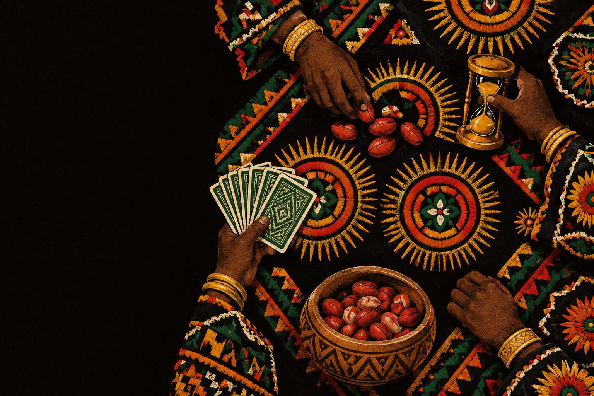
  <div class="veil"></div>
  <div class="in">
    <div class="lock">
      <svg class="symbol" data-k="#F2B705" data-r="#F07A1A" data-c="#17110E" width="96" height="96" viewBox="0 0 64 64" aria-hidden="true"></svg>
      <div><div class="w">wilbid</div><small>Game Night</small></div>
    </div>
    <h1 class="s2">Saison 2, Toghu</h1>
    <p>La première saison portait le ndop indigo de la nuit. La deuxième sort le toghu : le velours noir brodé des grandes fêtes du Grassfield, avec ses soleils, ses chevrons et son fil d'or.</p>
    <nav class="jump" aria-label="Sections">
      <a href="#symbole">Symbole</a><a href="#palette">Palette</a><a href="#typo">Typographie</a><a href="#emblemes">Emblèmes</a><a href="#applications">Applications</a>
    </nav>
  </div>
</header>

<section>
  <div class="in">
    <div class="head"><h2>Même famille, autre étoffe</h2><p class="lede">On reconnaît Wilbid au premier coup d'œil. On voit aussi que la saison a changé.</p></div>
    <div class="duo">
      <article class="season">
        <div class="sw" style="background-image:url(assets/s1-pattern.jpg);background-color:#141E4A"></div>
        <div class="tx">
          <h3>Saison 1, Ndop Nuit</h3>
          <dl><dt>Étoffe</dt><dd>Ndop indigo, teint à la réserve</dd><dt>Fond</dt><dd>Indigo nuit #141E4A</dd><dt>Accent</dt><dd>Instrument Serif italique</dd><dt>Ambiance</dt><dd>La veillée, le calme avant la partie</dd></dl>
        </div>
      </article>
      <article class="season">
        <div class="sw" style="background-image:url(assets/pattern.jpg);background-color:#17110E"></div>
        <div class="tx">
          <h3>Saison 2, Toghu</h3>
          <dl><dt>Étoffe</dt><dd>Toghu, velours noir brodé au fil satiné</dd><dt>Fond</dt><dd>Velours #17110E</dd><dt>Accent</dt><dd>Gloock, serif à fort contraste</dd><dt>Ambiance</dt><dd>La fête, le soleil qui se lève sur la table</dd></dl>
        </div>
      </article>
    </div>
    <p class="keep"><b>Ce qui ne change pas :</b> le mot wilbid en Syne 800, la noix de kola à quatre lobes, Manrope pour le texte, le rouge kola pour le MJ et le jaune pour les gains. Les points restent des PW et le njangi garde son nom.</p>
  </div>
</section>

<section id="symbole" class="vel">
  <div class="in">
    <div class="head"><h2>Le symbole se lève</h2><p class="lede">La noix de kola de la saison 1 reçoit une couronne de seize rayons, comme les soleils brodés au dos des toghus. Sans les rayons, c'est le symbole de toujours.</p></div>
    <div class="syms">
      <div class="sym big" style="background:#251B16">
        <svg class="symbol" data-k="#F2B705" data-r="#F07A1A" data-c="#251B16" viewBox="0 0 64 64" role="img" aria-label="Symbole saison 2"></svg>
        <span class="serif" style="font-size:22px;color:#F2B705">symbole principal, sur velours</span>
      </div>
      <div class="sym" style="background:#F6EBD9"><svg class="symbol" data-k="#E0452F" data-r="#17110E" data-c="#F6EBD9" viewBox="0 0 64 64" role="img" aria-label="Sur coton"></svg></div>
      <div class="sym" style="background:#F07A1A"><svg class="symbol" data-k="#17110E" data-r="#F6EBD9" data-c="#F07A1A" viewBox="0 0 64 64" role="img" aria-label="Sur orange toghu"></svg></div>
      <div class="sym" style="background:#1E8A5A"><svg class="symbol" data-k="#F2B705" data-r="#F6EBD9" data-c="#1E8A5A" viewBox="0 0 64 64" role="img" aria-label="Sur vert raphia, finale"></svg></div>
      <div class="sym" style="background:#F2B705"><svg class="symbol" data-k="#17110E" data-r="#17110E" data-c="#F2B705" viewBox="0 0 64 64" role="img" aria-label="Sur fil d'or"></svg></div>
      <div class="sym" style="background:#E0452F"><svg class="symbol" data-k="#F6EBD9" data-r="#F2B705" data-c="#E0452F" viewBox="0 0 64 64" role="img" aria-label="Sur rouge kola, MJ"></svg></div>
      <div class="sym" style="background:#17110E;border:1px solid #3A2D25"><svg class="symbol" data-k="#F6EBD9" data-r="" data-c="#17110E" viewBox="0 0 64 64" role="img" aria-label="Sans rayons, favicon"></svg></div>
    </div>
    <div class="why">
      <p class="mute">Taille minimale avec rayons : 24 px à l'écran, 8 mm à l'impression. En dessous, on retire les rayons et on garde la noix seule.</p>
      <p class="mute">Le losange au centre prend toujours la couleur du fond, pour que la noix reste ouverte.</p>
    </div>
  </div>
</section>

<section id="palette">
  <div class="in">
    <div class="head"><h2>Palette du fil</h2><p class="lede">Les largeurs montrent l'usage. Le velours domine, l'orange toghu signe la saison, le vert raphia est réservé à la finale. Clique un code pour le copier.</p></div>
    <div class="pal">
      <div class="c" style="background:#17110E;color:#F6EBD9"><b>Velours</b><button type="button">#17110E</button><span>fonds, slides, site</span></div>
      <div class="c" style="background:#F6EBD9;color:#17110E"><b>Coton</b><button type="button">#F6EBD9</button><span>texte, fil blanc, badges joueurs</span></div>
      <div class="c" style="background:#F07A1A;color:#17110E"><b>Orange toghu</b><button type="button">#F07A1A</button><span>accent de la saison, boutons</span></div>
      <div class="c" style="background:#F2B705;color:#17110E"><b>Fil d'or</b><button type="button">#F2B705</button><span>gains, orga</span></div>
      <div class="c" style="background:#E0452F;color:#FFFFFF"><b>Kola</b><button type="button">#E0452F</button><span>MJ</span></div>
      <div class="c" style="background:#1E8A5A;color:#FFFFFF"><b>Raphia</b><button type="button">#1E8A5A</button><span>finale</span></div>
    </div>
    <p class="cap">Surface secondaire sur velours : #251B16. Texte secondaire sur velours : #CDBFA8. Contrastes vérifiés : coton sur velours 15,9:1, orange toghu sur velours 6,7:1, velours sur fil d’or 10,3:1.</p>
  </div>
</section>

<section id="typo">
  <div class="in">
    <div class="head"><h2>Typographie</h2><p class="lede">Deux polices restent, une change. Gloock remplace l'italique de la saison 1 pour les mots qu'on veut faire sonner.</p></div>
    <div class="types">
      <div class="spec"><div class="d1">Njangi<br>24 PW</div><small>Syne 800, logo, titres, scores. Interlettrage serré, −0,04 em.</small></div>
      <div class="spec"><div class="d2">le soleil se lève sur la table</div><small>Gloock, accents, titres de saison, citations. Jamais en paragraphe.</small></div>
      <div class="spec"><div class="d3">Chaque équipe a deux minutes pour retrouver qui a écrit l'anecdote. La bonne réponse rapporte 3 PW.</div><small>Manrope 400 à 800, règles, site, livrets.</small></div>
    </div>
  </div>
</section>

<section class="vel">
  <div class="in">
    <div class="head"><h2>Illustrations et motif</h2><p class="lede">Même technique que la saison 1, une impression grainée en aplats, mais tout est brodé : on doit sentir le fil.</p></div>
    <div class="ill">
      <figure style="aspect-ratio:3/2"><figcaption>Visuel clé, site et slide d'ouverture</figcaption></figure>
      <figure class="tall">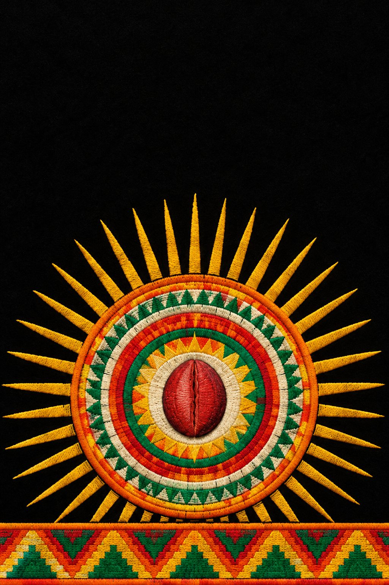<figcaption>Soleil, annonce de saison</figcaption></figure>
      <figure style="aspect-ratio:3/1.15">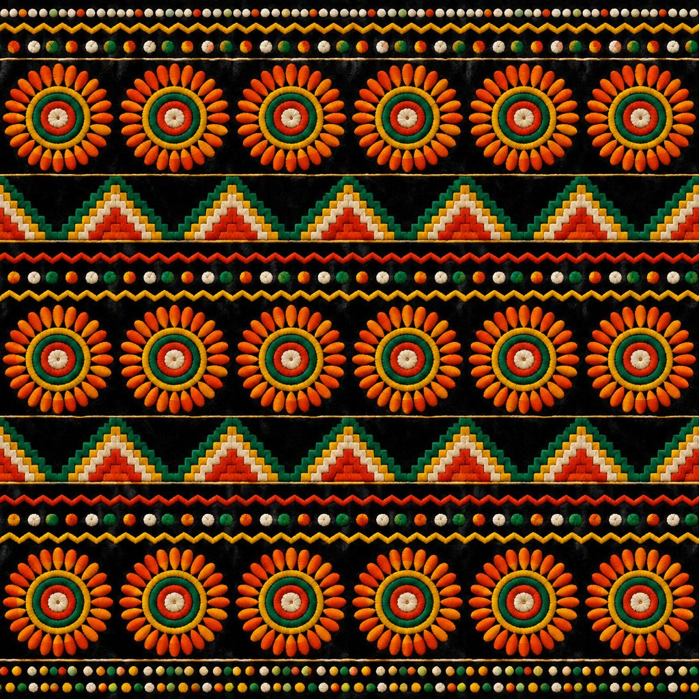<figcaption>Motif toghu, bandeaux et dos de cartes</figcaption></figure>
    </div>
  </div>
</section>

<section id="emblemes">
  <div class="in">
    <div class="head"><h2>Emblèmes de la saison 2</h2><p class="lede">Huit médaillons cerclés de chevrons brodés. Les usages sont des propositions : on les attribuera quand la liste des jeux de la saison 2 sera fixée.</p></div>
    <div class="ems">
      <div class="em">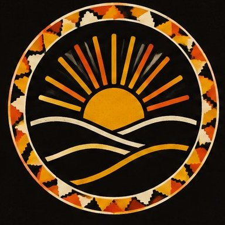<h3>L'aube</h3><p>Ouverture de la soirée, accueil, annonce de saison</p></div>
      <div class="em">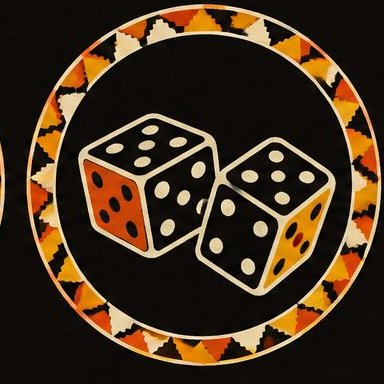<h3>Les dés</h3><p>Jeux de hasard et de mise</p></div>
      <div class="em">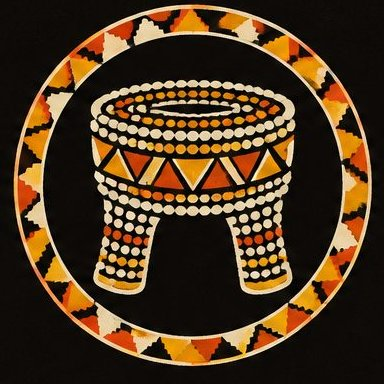<h3>Le tabouret perlé</h3><p>La finale, le siège du chef</p></div>
      <div class="em">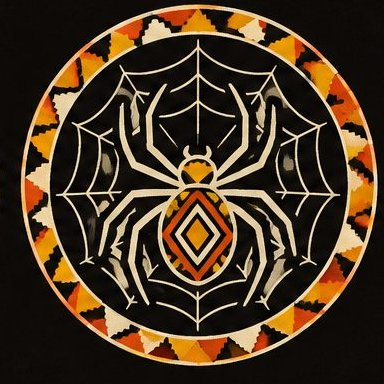<h3>L'araignée</h3><p>Énigmes et déduction, la sagesse qui devine</p></div>
      <div class="em">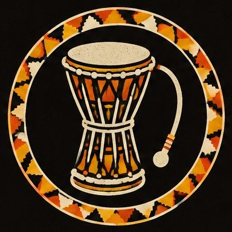<h3>Le tambour</h3><p>Blind test, ambiance, annonces</p></div>
      <div class="em">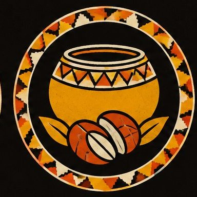<h3>La calebasse</h3><p>Les points, la banque de kola, le jeu fil rouge</p></div>
      <div class="em">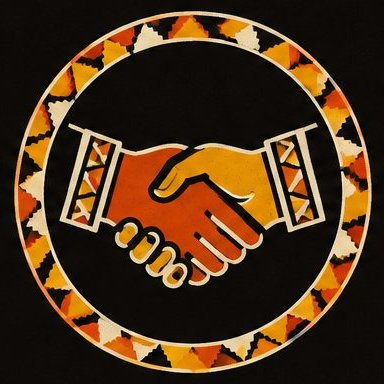<h3>L'alliance</h3><p>Duos, équipes, rencontres</p></div>
      <div class="em">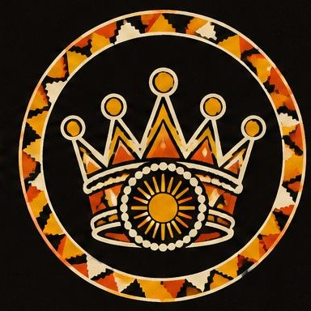<h3>La couronne</h3><p>Vainqueur de la saison</p></div>
    </div>
  </div>
</section>

<section id="applications" class="vel">
  <div class="in">
    <div class="head"><h2>Sur le terrain</h2><p class="lede">La slide qui annonce la saison 2 à la fin de la soirée, le post pour Instagram et WhatsApp, et les badges.</p></div>
    <div class="apps">
      <div>
        <div class="slide" role="img" aria-label="Slide 16:9 d'annonce de la saison 2">
          
          <div class="sv"></div>
          <div class="st">
            <div class="k">Wilbid Game Night</div>
            <div><div class="t">La saison 2 arrive.</div><div class="t2">Toghu</div></div>
            <div class="b"><i>Date à annoncer</i><span>Inscriptions sur le site</span></div>
          </div>
        </div>
        <p class="cap">Slide 16:9 pour le vidéoprojecteur, dernière partie de la présentation du jour J.</p>
      </div>
      <div>
        <div class="post" role="img" aria-label="Post 4:5 d'annonce">
          <div class="pt"><b>wilbid saison 2</b><span>Toghu</span></div>
        </div>
        <p class="cap">Post 4:5, Instagram et statut WhatsApp.</p>
      </div>
    </div>
    <div class="badges">
      <div class="bd" style="background:#F6EBD9;color:#17110E"><div class="band"></div><div class="n">Ngono</div><div class="r">Joueuse</div></div>
      <div class="bd" style="background:#E0452F;color:#FFFFFF"><div class="band"></div><div class="n">Tchoffo</div><div class="r">Maître du jeu</div></div>
      <div class="bd" style="background:#F2B705;color:#17110E"><div class="band"></div><div class="n">Ebolo</div><div class="r">Organisation</div></div>
      <div class="bd" style="background:#1E8A5A;color:#FFFFFF"><div class="band"></div><div class="n">Manga</div><div class="r">Finaliste</div></div>
    </div>
    <p class="cap">Badges 54 × 86 mm : mêmes couleurs de rôle qu'en saison 1, avec un bandeau toghu en tête et une couleur de plus pour les finalistes.</p>
  </div>
</section>

<section>
  <div class="in">
    <div class="head"><h2>Règles d'usage</h2></div>
    <div class="rules">
      <div><h3>On fait</h3><ul>
        <li>Velours en fond presque partout, comme le vêtement porté.</li>
        <li>Un seul accent orange par écran : un bouton, un chiffre, un mot.</li>
        <li>Le motif toghu en bandeau, jamais derrière du texte.</li>
        <li>Les visuels de la saison 1 restent dans les archives et le classement historique.</li>
      </ul></div>
      <div><h3>On évite</h3><ul>
        <li>Mélanger l'indigo de la saison 1 et le velours sur le même support, sauf pour une comparaison voulue.</li>
        <li>Le vert raphia hors de la finale.</li>
        <li>Les rayons du symbole sous 24 px.</li>
        <li>Gloock en paragraphe ou en petits caractères.</li>
      </ul></div>
    </div>
    <div class="files">
      <h3>Fichiers</h3>
      <p>Dans le dépôt : <code>identite-s2/</code>, avec les illustrations dans <code>identite-s2/assets/</code>.</p>
      <p>Sources des illustrations : le fichier Figma « Wilbid Game Night, saison 2, identité Toghu ».</p>
    </div>
  </div>
</section>

<script>
(function(){
  var rays='';
  for(var i=0;i<16;i++){var a=i*22.5;rays+='<path d="M32 2.5 34.6 9.5 29.4 9.5Z" transform="rotate('+a+' 32 32)"/>';}
  var ring='<circle cx="32" cy="32" r="25.2" fill="none" stroke-width="1.6"/>';
  document.querySelectorAll('svg.symbol').forEach(function(s){
    var k=s.dataset.k,r=s.dataset.r,c=s.dataset.c,h='';
    if(r){h+='<g class="rays" fill="'+r+'" stroke="'+r+'">'+rays+ring.replace('stroke-width','stroke="'+r+'" stroke-width')+'</g>';}
    var sc=r?0.78:1;
    h+='<g transform="translate(32 32) scale('+sc+') translate(-32 -32)" fill="'+k+'"><use href="#kola"/><path d="M32 27 37 32 32 37 27 32Z" fill="'+c+'"/></g>';
    s.innerHTML=h;
  });
  document.querySelectorAll('.c button').forEach(function(b){
    b.addEventListener('click',function(){
      var t=b.textContent;
      try{navigator.clipboard.writeText(t).then(function(){b.textContent='Copié';setTimeout(function(){b.textContent=t},1200)},function(){})}catch(e){}
    });
  });
})();
</script>
